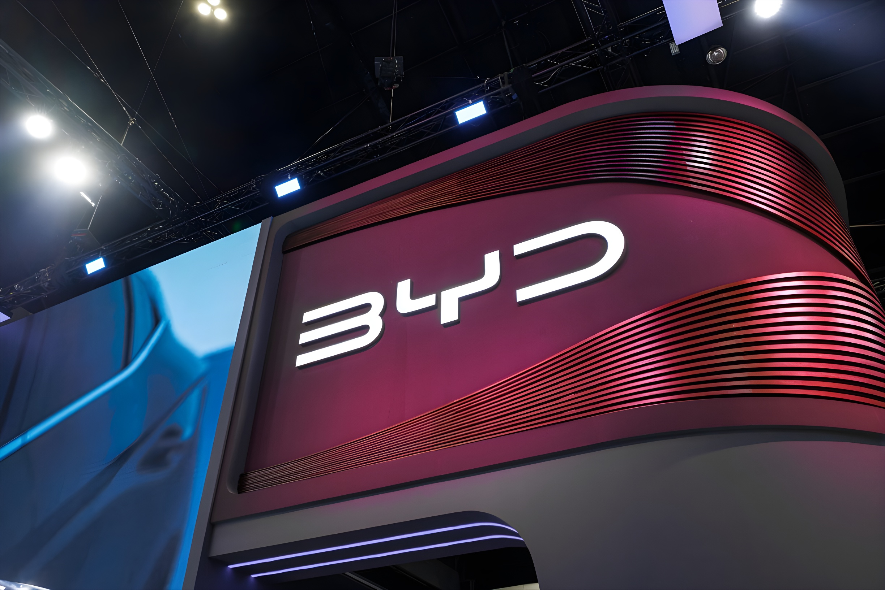

Depuis 2024, l'Espagne est devenue la destination privilégiée des constructeurs automobiles chinois cherchant à s'implanter en Europe. Chery à Barcelone, Leapmotor à Saragosse, Geely à Valence, SAIC et Changan en projet : une convergence inédite qui transforme la péninsule Ibérique en tête de pont industrielle de la Chine sur le Vieux Continent, dans un contexte de guerre douanière avec Bruxelles.
L'Espagne n'est pas devenue la destination de prédilection des constructeurs chinois par hasard. Deuxième producteur de véhicules en Europe derrière l'Allemagne, le pays assemble environ 2,4 millions de véhicules par an, dont 90 % sont destinés à l'exportation. Son tissu de sous-traitants — plus d'un millier de fournisseurs spécialisés — constitue un écosystème rare en Europe du Sud. Avec 17 à 18 sites de production répartis dans 10 communautés autonomes, l'infrastructure logistique et industrielle est déjà en place, prête à absorber de nouveaux donneurs d'ordres.
À cela s'ajoutent des avantages compétitifs tangibles : le coût horaire de la main-d'œuvre y est sensiblement inférieur à la moyenne de l'Europe occidentale, tandis que la productivité par ouvrier — environ 13,4 véhicules par an selon l'ACEA — figure parmi les plus élevées du continent. La fiscalité attractive et les incitations à l'investissement, notamment via les fonds Next Generation EU (dont 14 % de l'enveloppe espagnole est fléchée vers l'automobile), complètent un tableau particulièrement séduisant pour des investisseurs étrangers.
Le mouvement s'est amorcé de façon décisive avec Chery. Le premier exportateur automobile chinois a relancé l'ancienne usine Nissan de Barcelone — fermée en 2021 après 40 ans d'activité — via une coentreprise avec la société espagnole Ebro EV Motors, devenant ainsi le premier constructeur chinois à atteindre une production de masse localisée en Espagne. Sous les marques Omoda et Jaecoo, les véhicules sortent des chaînes depuis 2026.
Parallèlement, Leapmotor — constructeur électrique chinois entré en coentreprise à 49 % avec Stellantis — a sécurisé la production de son SUV compact B10 dans l'usine Stellantis de Saragosse, avec un démarrage prévu à la fin de l'année 2026. Le groupe envisage également d'y produire, à partir de 2028, un SUV Opel développé sur architecture Leapmotor. Plus significatif encore, Stellantis étudie un transfert éventuel de la propriété de son usine de Villaverde, près de Madrid, vers la coentreprise Leapmotor International — ce qui ferait de la marque chinoise le premier constructeur de l'empire du Milieu à contrôler opérationnellement une grande usine européenne.
L'UE adopte des droits compensateurs définitifs sur les véhicules électriques fabriqués en Chine (entre 17 % et 35,3 % selon les groupes), en plus des 10 % de droits de base déjà en vigueur.
Chery reprend l'ancienne usine Nissan de Barcelone via Ebro EV Motors. Première production locale de véhicules chinois en Espagne sous les marques Omoda et Jaecoo.
Leapmotor et Stellantis confirment la production du B10 à Saragosse. Geely entame des négociations pour reprendre une partie des lignes de montage de l'usine Ford d'Almussafes, à Valence.
SAIC Motor (MG Motor) retient officiellement l'Espagne pour son projet d'usine européenne, selon Bloomberg. Pedro Sánchez rencontre à Pékin les dirigeants de Changan lors de sa quatrième visite officielle en Chine.
Geely conclut un accord pour acquérir une partie du hall d'assemblage Body 3 de Ford à Valence. Changan confirme son intérêt pour un site dans le nord de l'Espagne, la région d'Aragon étant à l'étude.
Pour comprendre cet afflux de capitaux chinois, il faut d'abord saisir le rôle déterminant des barrières douanières européennes. Depuis le 31 octobre 2024, l'UE impose des surtaxes compensatoires sur les véhicules électriques fabriqués en Chine : 17 % pour BYD, 18,8 % pour Geely, et jusqu'à 35,3 % pour SAIC, en plus des droits de base de 10 %. Pour ce dernier groupe, la taxation totale peut ainsi dépasser 45 % sur certains modèles MG. Ces mesures, justifiées par la Commission européenne par l'existence de subventions publiques chinoises jugées déloyales, visaient à protéger les constructeurs européens.
L'effet obtenu est en partie inverse de l'objectif poursuivi : au lieu de décourager l'expansion des groupes chinois, les surtaxes les incitent à produire directement sur le sol européen, où elles ne s'appliquent pas. Une usine espagnole permet à un constructeur chinois de vendre ses véhicules estampillés « Made in EU », d'échapper intégralement aux droits compensateurs et de se rapprocher géographiquement de ses clients. Pour SAIC, dont les 307 000 immatriculations européennes en 2025 justifient amplement un investissement industriel local, le calcul est évident.
| Constructeur | Site en Espagne | Statut (mai 2026) |
|---|---|---|
| Chery (Omoda/Jaecoo) | Barcelone (ex-Nissan) | En production |
| Leapmotor | Saragosse (Stellantis) | Démarrage fin 2026 |
| Geely | Valence (Ford) | Accord en cours |
| SAIC (MG Motor) | Site non précisé | Espagne retenue |
| Changan | Nord Espagne (Aragon ?) | À l'étude |
Pour l'Espagne, cette attractivité est une opportunité mais aussi un défi. Les usines Ford de Valence et Stellantis de Villaverde — fleurons de l'industrie nationale — pourraient passer sous contrôle opérationnel chinois, ce qui soulève des questions sur l'indépendance industrielle du pays et la pérennité des emplois locaux. Pedro Sánchez, qui a effectué quatre visites officielles en Chine depuis le début de son mandat, assume une posture d'ouverture : pour Madrid, attirer des investisseurs chinois dans des usines menacées de fermeture vaut mieux que de voir ces sites disparaître, même si certains syndicats s'interrogent sur les conditions à long terme.
« Nous allons produire des véhicules en Europe, en Espagne notamment, et le plus vite possible. »
— Tianshu Xin, directeur général de Leapmotor International, 2025L'afflux des constructeurs chinois en Espagne s'inscrit dans une tendance plus large : la recomposition profonde de la géographie industrielle automobile européenne. Face aux surcapacités chroniques — de nombreux sites tournent à 50-55 % de leur capacité — les groupes européens ouvrent leurs usines aux partenaires chinois pour éviter des fermetures massives, tandis que ces derniers contournent les barrières douanières en s'implantant localement. L'Espagne, grâce à son tissu industriel dense, ses coûts compétitifs et sa position au sein du marché unique, est apparue comme le maillon idéal de ce nouvel équilibre. Elle est en train de devenir, à la fois, la porte d'entrée de la Chine automobile en Europe et l'un des territoires-tests d'une coexistence industrielle dont les contours, économiques, sociaux et géopolitiques, restent encore à définir.
Desde 2024, España se ha convertido en el destino preferido de los constructores de automóviles chinos que buscan establecerse en Europa. Chery en Barcelona, Leapmotor en Zaragoza, Geely en Valencia, SAIC y Changan en proyecto: una convergencia inédita que transforma la península Ibérica en cabeza de puente industrial de China en el Viejo Continente, en un contexto de guerra arancelaria con Bruselas.
España no se ha convertido por casualidad en el destino predilecto de los constructores chinos. Segundo productor de vehículos en Europa tras Alemania, el país ensambla alrededor de 2,4 millones de vehículos al año, de los cuales el 90 % se destina a la exportación. Su tejido de subcontratistas — más de un millar de proveedores especializados — constituye un ecosistema poco común en el sur de Europa. Con entre 17 y 18 centros de producción repartidos en 10 comunidades autónomas, la infraestructura logística e industrial ya está en marcha, lista para absorber nuevos encargos.
A ello se suman ventajas competitivas tangibles: el coste horario de la mano de obra es sensiblemente inferior al de Europa occidental, mientras que la productividad por trabajador — aproximadamente 13,4 vehículos al año según la ACEA — figura entre las más elevadas del continente. La fiscalidad atractiva y los incentivos a la inversión, especialmente a través de los fondos Next Generation EU (con el 14 % de la dotación española destinada al sector del automóvil), completan un panorama especialmente atractivo para los inversores extranjeros.
El movimiento se inició de forma decisiva con Chery. El primer exportador de automóviles chino relanzó la antigua fábrica de Nissan en Barcelona — cerrada en 2021 tras 40 años de actividad — mediante una empresa conjunta con la sociedad española Ebro EV Motors, convirtiéndose así en el primer constructor chino en alcanzar una producción en masa localizada en España. Bajo las marcas Omoda y Jaecoo, los vehículos salen de las líneas de producción desde 2026.
Paralelamente, Leapmotor — constructor eléctrico chino que ha entrado en una empresa conjunta con Stellantis con una participación del 49 % — ha asegurado la producción de su SUV compacto B10 en la planta Stellantis de Zaragoza, con una puesta en marcha prevista para finales de 2026. El grupo también prevé producir allí, a partir de 2028, un SUV Opel desarrollado sobre arquitectura Leapmotor. Más significativo aún, Stellantis estudia una posible transferencia de la propiedad de su planta de Villaverde, cerca de Madrid, a la empresa conjunta Leapmotor International — lo que convertiría a la marca china en el primer constructor del Imperio del Centro en controlar operativamente una gran fábrica europea.
La UE adopta derechos compensatorios definitivos sobre los vehículos eléctricos fabricados en China (entre el 17 % y el 35,3 % según los grupos), además del 10 % de derechos de base ya en vigor.
Chery retoma la antigua fábrica de Nissan en Barcelona mediante Ebro EV Motors. Primera producción local de vehículos chinos en España bajo las marcas Omoda y Jaecoo.
Leapmotor y Stellantis confirman la producción del B10 en Zaragoza. Geely inicia negociaciones para hacerse con parte de las líneas de montaje de la planta Ford de Almussafes, en Valencia.
SAIC Motor (MG Motor) elige oficialmente España para su proyecto de fábrica europea, según Bloomberg. Pedro Sánchez se reúne en Pekín con los dirigentes de Changan durante su cuarta visita oficial a China.
Geely cierra un acuerdo para adquirir parte del pabellón de montaje Body 3 de Ford en Valencia. Changan confirma su interés por un emplazamiento en el norte de España, con la región de Aragón en estudio.
Para entender este aflujo de capitales chinos, hay que comprender primero el papel determinante de las barreras arancelarias europeas. Desde el 31 de octubre de 2024, la UE impone sobretasas compensatorias sobre los vehículos eléctricos fabricados en China: el 17 % para BYD, el 18,8 % para Geely y hasta el 35,3 % para SAIC, además de los derechos de base del 10 %. Para este último grupo, la tributación total puede superar el 45 % en determinados modelos MG. Estas medidas, justificadas por la Comisión Europea por la existencia de subvenciones públicas chinas consideradas desleales, pretendían proteger a los constructores europeos.
El efecto obtenido es en parte contrario al objetivo perseguido: en lugar de desalentar la expansión de los grupos chinos, las sobretasas los incentivan a producir directamente en suelo europeo, donde no se aplican. Una fábrica española permite a un constructor chino vender sus vehículos etiquetados como «Made in EU», eludir por completo los derechos compensatorios y acercarse geográficamente a sus clientes. Para SAIC, cuyas 307 000 matriculaciones europeas en 2025 justifican sobradamente una inversión industrial local, el cálculo es evidente.
| Constructor | Emplazamiento en España | Estado (mayo 2026) |
|---|---|---|
| Chery (Omoda/Jaecoo) | Barcelona (ex-Nissan) | En producción |
| Leapmotor | Zaragoza (Stellantis) | Arranque fin 2026 |
| Geely | Valencia (Ford) | Acuerdo en curso |
| SAIC (MG Motor) | Emplazamiento sin precisar | España elegida |
| Changan | Norte España (¿Aragón?) | En estudio |
Para España, este atractivo es una oportunidad pero también un desafío. Las plantas de Ford en Valencia y de Stellantis en Villaverde — emblemas de la industria nacional — podrían pasar al control operativo chino, lo que plantea interrogantes sobre la independencia industrial del país y la sostenibilidad del empleo local. Pedro Sánchez, que ha realizado cuatro visitas oficiales a China desde el inicio de su mandato, asume una postura de apertura: para Madrid, atraer inversores chinos a fábricas amenazadas de cierre es preferible a ver desaparecer esos centros productivos, aunque algunos sindicatos se preguntan por las condiciones a largo plazo.
« Vamos a producir vehículos en Europa, en España en particular, y lo antes posible. »
— Tianshu Xin, director general de Leapmotor International, 2025El aflujo de constructores chinos en España se inscribe en una tendencia más amplia: la profunda recomposición de la geografía industrial automovilística europea. Ante el exceso de capacidad crónico — muchas plantas funcionan al 50-55 % de su capacidad —, los grupos europeos abren sus fábricas a socios chinos para evitar cierres masivos, mientras que estos últimos sortean las barreras arancelarias implantándose localmente. España, gracias a su denso tejido industrial, sus costes competitivos y su posición dentro del mercado único, ha emergido como el eslabón idóneo de este nuevo equilibrio. Está convirtiéndose, a la vez, en la puerta de entrada de la China automovilística en Europa y en uno de los territorios de prueba de una coexistencia industrial cuyos contornos — económicos, sociales y geopolíticos — están aún por definir.